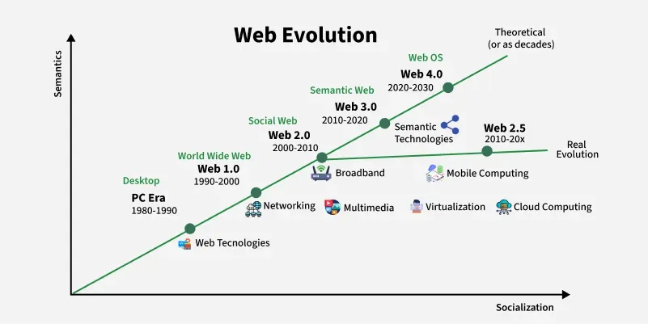

The web has evolved significantly since its inception in the early 1990s. It has transformed from a simple collection of static web pages to a dynamic and interactive platform that has revolutionized the way we communicate, access information and conduct business. The evolution of the web can be categorized into several stages:
This is the earliest stage of the web, characterized by static web pages that were primarily used for displaying information. Web 1.0 was limited in terms of interactivity and user engagement, as it lacked features such as forms, multimedia and dynamic content. It was mainly used for publishing content and sharing information.
This stage of the web introduced dynamic content and interactivity, allowing users to create and share content more easily. Web 2.0 is characterized by the rise of social media platforms, blogs, wikis and other user-generated content. It has enabled greater collaboration and communication among users, as well as the development of new business models based on user engagement and participation. There is also the Web 2.5 which represents a transitional phase between Web 2.0 and Web 3.0.
This is the current stage of the web, which focuses on making data more meaningful and interconnected. Web 3.0 aims to create a more intelligent and personalized web experience by using technologies such as artificial intelligence, machine learning and natural language processing. It enables better data integration, improved search capabilities and enhanced user experiences.
This is the future stage of the web, which is expected to be characterized by the integration of advanced technologies such as artificial intelligence, virtual reality and augmented reality. Web 4.0 is anticipated to provide a more immersive and interactive web experience, with applications in areas such as gaming, education and healthcare.
